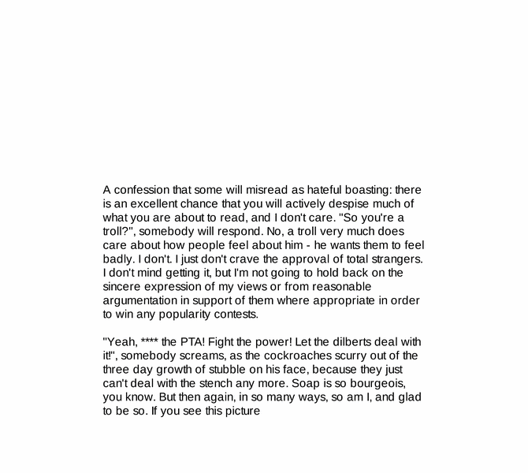

Previewing: Stumbling into the Void Previewing: Stumbling into the Void 
Use the left/right red arrow controls to navigate through this ring - Click the preview image to visit the member site.

Site includes a Chicago Photo Gallery, a Midwestern recipe section under construction, a metablog which I've added and whatever else I wish to inflict on you. You've been warned.
Stumbling into the Void owned by:
 joedunphy joedunphy
A member of the original webring since 12/18/2009.
|
|